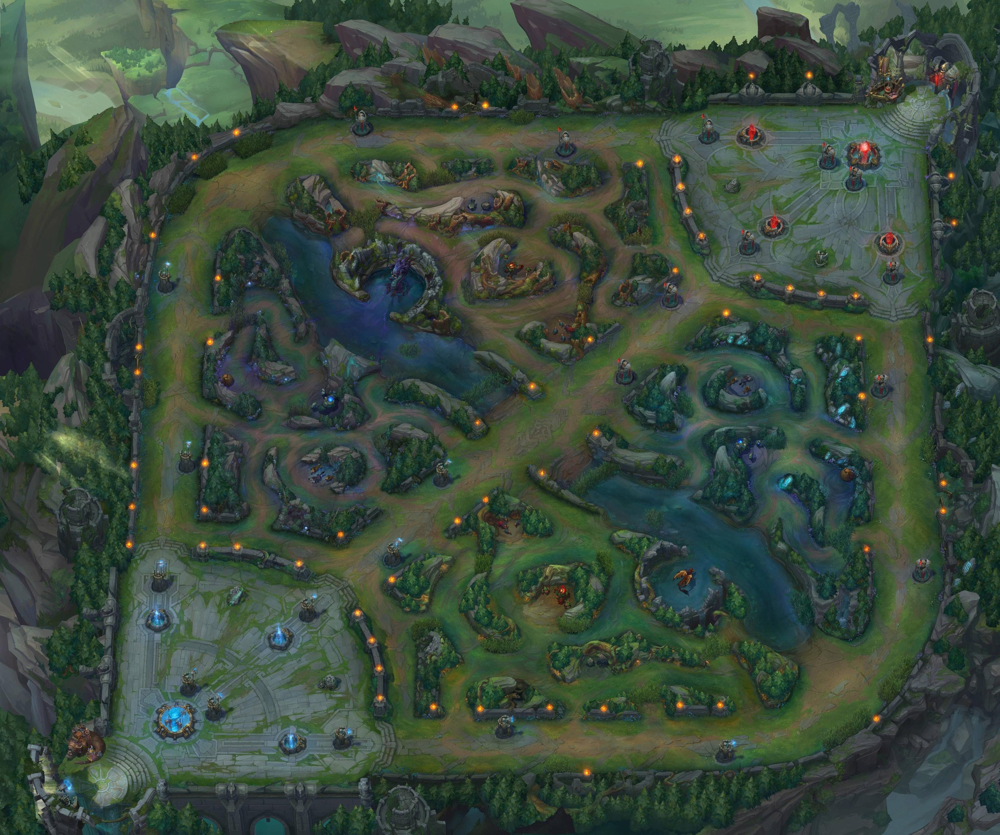

League of Legends es actualmente el juego más jugado del mundo. Recientemente los datos nos muestran que hay
100
millones de jugadores activos mensualmente. Desde la creación de ligas de competición profesionales el juego
y su
comunidad han crecido año tras año. Pero más que datos, vamos a centrarnos en explicar qué es League of
Legends y por
qué gusta y emociona a tantas personas de todo el mundo
La competicion
La mayoría hemos soñado con jugar al fútbol de forma profesional cuando éramos jóvenes,el ser
famoso por tu trabajo o
quizás poder vivir haciendo lo que te gusta. La competición en League of Legends está cogiendo estandartes
muy altos,
los jóvenes de hoy en día entrenan incansablemente para convertirse en un jugador profesional de
eSports, el
nuevo sueño
ya está aquí.
La liga consta de seis divisiones, siendo Challenger la máxima categoría y Bronce la más
baja. En cada
división los
jugadores se enfrentan a oponentes de su mismo nivel y, según van ganando, van escalando posiciones, siendo
emparejados
contra rivales más fuertes.
Subir de división es extremadamente difícil a medida que se escala en la tabla, motivo que convierte al
juego en uno muy
competitivo. La mayoría de los jugadores profesionales se encuentran en Challenger, pero hay muchos
jugadores amateur
intentando día tras día llegar a dicha división y que se reconozca su trabajo.
El juego
Combinando pensamiento estratégico, reflejos veloces y juego en equipo, el objetivo del juego, y lo que
determina al
vencedor, es destruir la base del equipo rival.
En League of Legends existen varios modos de juego, el más popular es “La Grieta del Invocador”, una batalla
que
enfrenta a dos equipos de cinco jugadores. Es el mapa más frecuentado debido a que es
considerado el estándar en el
juego competitivo y el único donde se pueden jugar partidas clasificatorias, en las que el resultado afecta
a la
puntuación en la liga.
Antes de empezar la partida, el jugador debe escoger un personaje o “campeón” de entre la
gran variedad disponible. Cada
uno cuenta con habilidades únicas y con un propósito diferente.
Cada equipo inicia la partida en su respectiva área del mapa, dentro de su base, situadas ambas
diametralmente opuestas.
En el interior de la base se encuentra el Nexo, una estructura que al ser derribada termina
la partida y que está
protegida por una gran cantidad de torretas automáticas. Desde el Nexo aparecen oleadas de súbditos cada 30
segundos,
que se dirigen a través de los carriles hacia la base contraria.
Los jugadores cuentan con un amplio abanico objetos que pueden ser comprados con dinero ficticio obtenido en
partida,
los cuales hacen que el campeón inflija más daño o sea más resistente. El dinero se
consigue con la destrucción de
torretas, súbditos enemigos, monstruos neutrales y campeones. A su vez, se va obteniendo experiencia, que
ayuda a subir
niveles y mejorar habilidades.
Cada campeón cuenta con 4 habilidades y ninguna es igual a otra. Con más de 130 personajes, existen
alrededor de 520
habilidades únicas. Cada una de ellas se identifica con su respectiva tecla (Q, W, E o R). La cuarta
habilidad, la R, es
llamada “Ultimate”, es la más importante y requiere bastante tiempo para volver a poder ser utilizada.
Todo encuentro empieza en igualdad de condiciones, con todos los jugadores con la misma
cantidad de oro y experiencia
inicial. La victoria está completamente determinada por la habilidad de los participantes.
Grieta Del Invocador

Este mapa dispone de tres calles distribuidas simétricamente que conectan las bases de ambos equipos y
entre ellas está
la jungla. En cada calle se encuentran las torretas, que cuentan con un alcance determinado y atacan a los
enemigos que
se encuentran solos en ese rango.
Antes de entrar en la grieta hay que tener claro cuál es el rol que va a ocupar cada persona en partida.